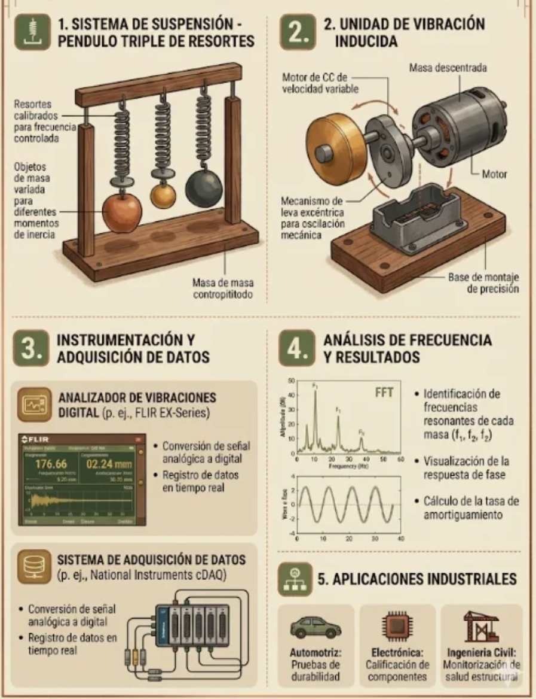

Aprendemos cómo funciona la vibración en máquinas como la zaranda
La vibración es un movimiento repetitivo de un objeto. En la zaranda mecánica, este movimiento permite separar productos como papas, tomates o granos.

Construye un pequeño sistema vibratorio con un motor y un peso desbalanceado.